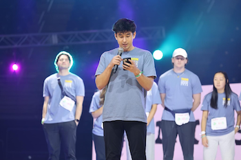

Project Gallery
Photo taken at Penn State Thon 2024
Here is my speech
Hello, my name is Isaac Monahan. I'm a sophomore from Arlington, VA, majoring in cybersecurity and a part of Tau Kappa Epsilon. I am honored to be Thon’s Greek speaker for 2024. When I was offered this opportunity to speak, I was - in a word- hesitant. It has been almost five years since I was cancer-free, and it’s not a time I like to think about muchless talk about to a crowd of thousands. I wasn't a part of Thon my first year, again I didn’t want to be reminded of those dark times. But, this year when I opened my donor drive with TKE, I decided to post my experience on my donor page, and I knew it was a good opportunity for me to get involved in this amazing experience that is Penn State Thon.
My journey, like many others, was unpredictable and sudden. I was a typical kid, active in sports and busy with schoolwork. Suddenly, I started to feel pretty sick for a couple of weeks and went to my parents and friends to express my concern. When I went to the doctors they couldn't figure out what was wrong and I was told it was Mono. At the time I was still very active playing soccer and basketball, but I knew something was wrong and I was pushing myself too hard.
Luckily – well really unluckily – my parents were persistent and we went for more tests. After one more blood test, I left not knowing what was going to happen, and how my life would change after that moment. But, I wouldn't have to wait long and at around 10 pm on a regular school night, my parents got a call and we rushed to the local children's hospital.
The most painful thing I ever experienced was hearing my mom cry. I couldn’t see her, but I could hear her. I was in a hospital room, alone, with IVs going into my arm from big bags hanging above me. I did not know what was happening, but when I heard my mom cry, I knew this wasn’t just an overnight trip. On June 8, 2019, I was diagnosed with mixed phenotype acute leukemia, a rare type of leukemia where more than one type of leukemia occurs at the same time, in this case, a combination of acute lymphoblastic leukemia (ALL) and acute myeloblastic leukemia (AML). I had no idea what this meant at the time, all I knew was that this was the worst-case scenario.
I spent the next 9 months enduring intense treatment. I went through both chemotherapy and radiation. My body was extremely weak. There was a time early on in my treatment when I was throwing up everything and lost around 50 pounds weighing in at around 100ish pounds. I had a medical port in my chest that I would be fed medicine at all times. One thing the doctors used this device for was to put me to sleep for my surgeries. Overall, I probably underwent 30 surgeries. During the middle of my more intensive treatment, I was allergic to my primary medication (PEG). I had a horrible reaction to it, leaving me on the floor unable to breathe. The alternative to the medication was a medicine that had to be administered via three simultaneous shots in my leg every other day for six weeks. This was brutal. I was at the hospital for hours on the shot days. I would get so mad, not because of a little shot, trust me I got used to needles after all this, but the fact that I had to come in for shots and have them take half my day to do so. I thank my dad every day for taking and being with me every day to do so.
The whole time I was going through treatment in the hospital, I had friends and family visit me which made bad days bearable. My family did everything for me to make me feel as comfortable as possible when I was in the room. My dad rewired the tv in the hospital room and made sure I had all my home channels. The home-like feeling distracted me from all the hospital trauma. After being discharged, I realized it would be great if other kids at the hospital could have rooms like this. We held a fundraiser that raised over $3,000 in just a month. The funds were used to make kits that transformed the hospital television into your “home” TV. It was amazing to see how many of my friends and family donated to this cause in such a short amount of time. I guess I had a lot to give, I just didn’t know it at first. Since donating to my hospital, my family and I, with the help of those same friends and family, made another donation of around the same amount to all the nurses and doctors. I wouldn't be here without them, and I appreciate all that they did for me.
I know firsthand how important this money we collectively raise for THON is. The importance of having professional doctors, effective medicine, and clean institutions where patients can get the right treatment. The kids who are fighting childhood cancer are the strongest people in the world, and it’s amazing to see everyone together here to show our support.
Since joining TKE, I have been a part of many philanthropic events. An example of one is as a brotherhood we were fortunate enough to be able to host the Thon All Greek Fall Fest in our back lot. This is an event organized by THON, and something that all of Greek life takes part in. We set up games and activities and had the families and kids come and hang out. Seeing everyone coming out for the same purpose and all doing it with a smile was priceless. It is these activities that make me proud to be a part of TKE. But, I know this sense of service is not just at TKE though, I see all over Greek life that we have the same commitment to community service and giving. And through THON, we have united with the very important goal to fight childhood cancer. Thank you for this opportunity to share my story, and for everything we are doing to move us closer to this goal. I know we are making a difference.